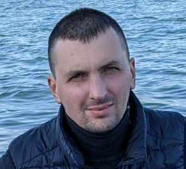

Ihor Perzhun
Date of birth: September 21, 1985. Contacts: Residential address: Ukraine, Ternopil Region town Podvolochysk. Mob. phone: +38(098)7361699 Viber, WhatsApp: +38(098)7361699 E-mail: iperzhun@gmail.com Skype: iperzhun@gmail.com
Education
"Institute of Natural Resources Management" in Kolomyia Specialty: Geodesy, cartography and land management. Degree: Bachelor. Years of study 2002-2006. Full-time education.
"Kyiv National University of Construction and Architecture" Specialty: Land management and cadastre. Degree: Specialist. Years of study 2006-2007. Full-time education.
Employment
10.2009 - 04.2011 Mekhtransbud LLC. Position: engineer - surveyor, Main activity: Field and chamber work, design and submission of technical documentation. Direction: Construction of hydraulic engineering structures (earthen and concrete dams), project: "Dniestrovska HPP"
04.2011-03.2015 LLC "Energy and road construction" Position: engineer - surveyor, Main activity: Field and chamber work, design and submission of technical documentation. Direction: Construction of hydraulic engineering structures and execution of construction and earthworks (earthen and concrete dams, support walls, cable channels, drainage structures, concrete and soil construction technical roads). project: "Dniester HPP" Open-pit development of lignite, "Lysyacha Balka" quarry Construction and repair of highways (asphalt concrete surface).
08.2017-08.2018 "IGH Rus Holding" LLC Position: engineer - surveyor, Main activity: Field and chamber work, design and submission of technical documentation. Direction: Construction of hydraulic engineering buildings (installation of metal structures, pipelines, lifting mechanisms), project: "Mtkvari HPP" Georgia.
09.2018-03.2019 Sakenergoremonti LLC Position: foreman, technical consultant Main activity: Management and control completed works, design and submission of technical documentation, project activity, provision of technical advice, Direction: Construction of hydrotechnical structures, projects: "Mtkvari HPP" (VRP, mining development), "Sashuala HPP" (mountain development, construction bridges, technical buildings), "Kakhari HPP" (VRP, cable ducts, retaining walls) Georgia
11.2018 - present time. "IGH Rus Holding" LLC Position: engineer - surveyor, safety engineer Main activity: Field and chamber work, preparation and delivery of technical documentation, monitoring of equipment occupational safety and health Direction: Construction of hydrotechnical structures, projects: "Mtkvari HPP" (installation of metal structures, pipelines, lifting mechanisms), "Inguri HPP" (installation of metal structures, lifting mechanisms, reconstruction of hydraulic equipment) Georgia.
From 02.2021 in the position of: head of the district. Main activity: Organization, planning, management and control of construction and assembly works. Direction: Installation hydromechanical equipment and lifting mechanisms, projects: "Inguri HPP" (reconstruction of hydraulic equipment) Georgia. "Mtkvari HPP" (installation of hydraulic equipment, lifting mechanisms (Kozlovy special crane 2x80t).